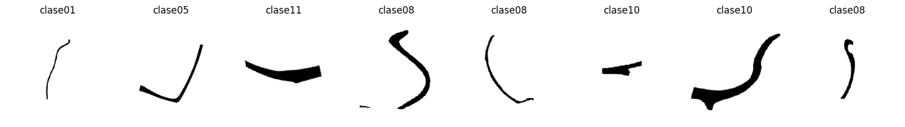
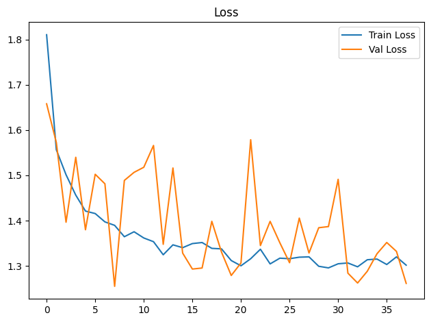
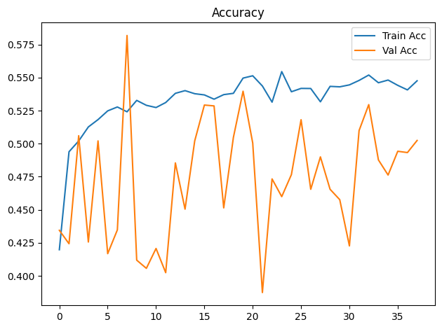
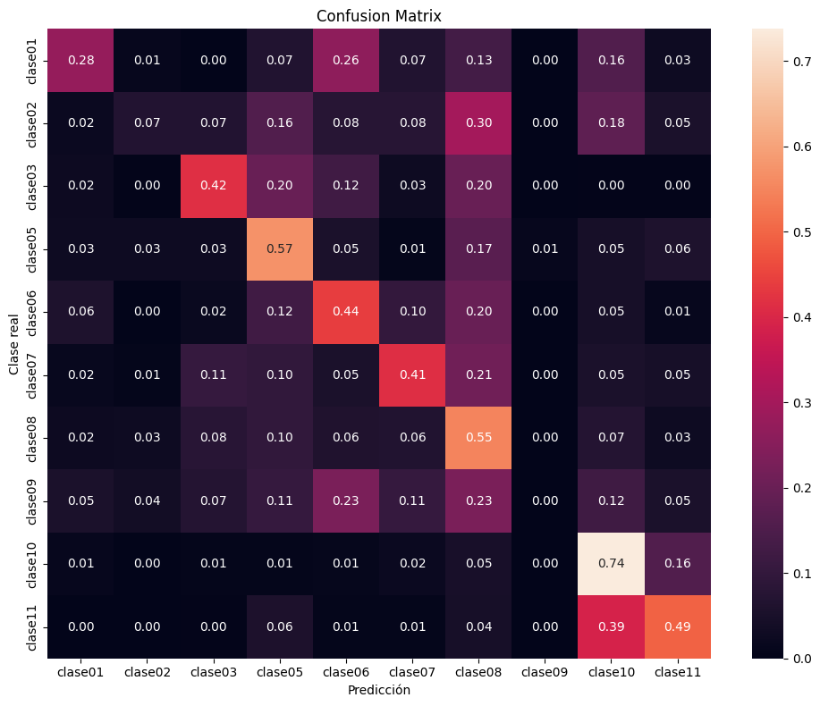

Dispositivo utilizado para procesamiento: CUDA - NVIDIA GeForce GTX 1650Entrenamiento de CNN ResNet-18 con Transfer Learning
Objetivos
- Construir un modelo baseline de clasificación mediante transfer learning con ResNet18 preentrenada.
- Entrenar inicialmente solo la capa clasificadora y descongelar
layer4enUNFREEZE_EPOCHcon una tasa de aprendizaje menor. - Aplicar transformaciones y aumentación de datos al conjunto de entrenamiento.
- Entrenar y validar el modelo registrando loss y accuracy por época.
- Detener el entrenamiento si val_loss no mejora suficientemente durante la paciencia configurada.
- Evaluar el modelo de la mejor época de validación sobre el conjunto de prueba.
- Analizar los resultados mediante accuracy, precision, recall, F1-score, reporte de clasificación y matriz de confusión normalizada.
- Guardar los pesos restaurados de la mejor época de validación (o los finales si se desactiva la parada anticipada).
Dispositivo para procesamiento
División de datos
La pertenencia de cada imagen a train, val o test se lee de la metadata generada por el notebook de división. La relación se realiza mediante ruta_relativa; por tanto, el split no se recalcula aunque cambien la semilla o los parámetros del entrenamiento.
Dataset seleccionado: unificado
Directorio de datos: /home/rafael/Dev/vasijas/data/12.unificado_divididos_en_train_val_y_test
Metadata de split: data/12.unificado_divididos_en_train_val_y_test/metadata.csv
Clases: clase01 clase02 clase03 clase05 clase06 clase07 clase08 clase09 clase10 clase11
Split persistido -> train: 14231, val: 3059, test: 3059
Conteo train por clase: [342, 608, 950, 741, 684, 646, 3724, 266, 4712, 1558]
Pesos de clase: [4.161, 2.341, 1.498, 1.921, 2.081, 2.203, 0.382, 5.35, 0.302, 0.913]Epoch 1/300
Train Loss: 1.8104 | Train Acc: 0.4198 | Val Loss: 1.6579 | Val Acc: 0.4345
Tiempo de epoch: 0:01:26.897438
Epoch 2/300
Train Loss: 1.5564 | Train Acc: 0.4939 | Val Loss: 1.5725 | Val Acc: 0.4243
Tiempo de epoch: 0:01:24.190069
Epoch 3/300
Train Loss: 1.5013 | Train Acc: 0.5021 | Val Loss: 1.3965 | Val Acc: 0.5060
Tiempo de epoch: 0:01:24.106198
Epoch 4/300
Train Loss: 1.4563 | Train Acc: 0.5127 | Val Loss: 1.5398 | Val Acc: 0.4256
Tiempo de epoch: 0:01:24.316116
Epoch 5/300
Train Loss: 1.4211 | Train Acc: 0.5182 | Val Loss: 1.3799 | Val Acc: 0.5021
Tiempo de epoch: 0:01:24.299834
Epoch 6/300
Train Loss: 1.4156 | Train Acc: 0.5248 | Val Loss: 1.5023 | Val Acc: 0.4168
Tiempo de epoch: 0:01:24.237032
Epoch 7/300
Train Loss: 1.3972 | Train Acc: 0.5278 | Val Loss: 1.4813 | Val Acc: 0.4348
Tiempo de epoch: 0:01:24.173373
Epoch 8/300
Train Loss: 1.3896 | Train Acc: 0.5241 | Val Loss: 1.2550 | Val Acc: 0.5819
Tiempo de epoch: 0:01:24.224776
Epoch 9/300
Train Loss: 1.3645 | Train Acc: 0.5328 | Val Loss: 1.4887 | Val Acc: 0.4119
Tiempo de epoch: 0:01:24.225005
Epoch 10/300
Train Loss: 1.3754 | Train Acc: 0.5291 | Val Loss: 1.5066 | Val Acc: 0.4057
Tiempo de epoch: 0:01:24.142695
Epoch 11/300
Train Loss: 1.3617 | Train Acc: 0.5274 | Val Loss: 1.5178 | Val Acc: 0.4207
Tiempo de epoch: 0:01:24.164277
Epoch 12/300
Train Loss: 1.3535 | Train Acc: 0.5312 | Val Loss: 1.5659 | Val Acc: 0.4024
Tiempo de epoch: 0:01:24.454017
Epoch 13/300
Train Loss: 1.3246 | Train Acc: 0.5381 | Val Loss: 1.3477 | Val Acc: 0.4855
Tiempo de epoch: 0:01:24.260215
Epoch 14/300
Train Loss: 1.3465 | Train Acc: 0.5402 | Val Loss: 1.5162 | Val Acc: 0.4505
Tiempo de epoch: 0:01:24.177126
Epoch 15/300
Train Loss: 1.3403 | Train Acc: 0.5378 | Val Loss: 1.3283 | Val Acc: 0.5021
Tiempo de epoch: 0:01:24.246511
Epoch 16/300
Train Loss: 1.3493 | Train Acc: 0.5369 | Val Loss: 1.2931 | Val Acc: 0.5293
Tiempo de epoch: 0:01:24.228891
Epoch 17/300
Train Loss: 1.3516 | Train Acc: 0.5337 | Val Loss: 1.2953 | Val Acc: 0.5286
Tiempo de epoch: 0:01:24.075483
Epoch 18/300
Train Loss: 1.3388 | Train Acc: 0.5371 | Val Loss: 1.3985 | Val Acc: 0.4515
Tiempo de epoch: 0:01:24.250204
Epoch 19/300
Train Loss: 1.3376 | Train Acc: 0.5381 | Val Loss: 1.3303 | Val Acc: 0.5047
Tiempo de epoch: 0:01:24.111048
Epoch 20/300
Train Loss: 1.3119 | Train Acc: 0.5496 | Val Loss: 1.2789 | Val Acc: 0.5397
Tiempo de epoch: 0:01:24.230123
Epoch 21/300
Train Loss: 1.3003 | Train Acc: 0.5514 | Val Loss: 1.3065 | Val Acc: 0.5005
Tiempo de epoch: 0:01:24.141313
Epoch 22/300
Train Loss: 1.3159 | Train Acc: 0.5437 | Val Loss: 1.5786 | Val Acc: 0.3874
Tiempo de epoch: 0:01:24.131396
Epoch 23/300
Train Loss: 1.3368 | Train Acc: 0.5314 | Val Loss: 1.3450 | Val Acc: 0.4734
Tiempo de epoch: 0:01:24.200437
Epoch 24/300
Train Loss: 1.3045 | Train Acc: 0.5546 | Val Loss: 1.3984 | Val Acc: 0.4600
Tiempo de epoch: 0:01:24.100577
Epoch 25/300
Train Loss: 1.3171 | Train Acc: 0.5393 | Val Loss: 1.3511 | Val Acc: 0.4766
Tiempo de epoch: 0:01:24.114715
Epoch 26/300
Train Loss: 1.3159 | Train Acc: 0.5418 | Val Loss: 1.3071 | Val Acc: 0.5181
Tiempo de epoch: 0:01:24.401700
Epoch 27/300
Train Loss: 1.3192 | Train Acc: 0.5418 | Val Loss: 1.4056 | Val Acc: 0.4655
Tiempo de epoch: 0:01:24.192300
Epoch 28/300
Train Loss: 1.3200 | Train Acc: 0.5317 | Val Loss: 1.3285 | Val Acc: 0.4900
Tiempo de epoch: 0:01:24.288372
Epoch 29/300
Train Loss: 1.2992 | Train Acc: 0.5434 | Val Loss: 1.3843 | Val Acc: 0.4655
Tiempo de epoch: 0:01:24.157267
Epoch 30/300
Train Loss: 1.2956 | Train Acc: 0.5430 | Val Loss: 1.3869 | Val Acc: 0.4577
Tiempo de epoch: 0:01:24.126273
Epoch 31/300
Train Loss: 1.3047 | Train Acc: 0.5445 | Val Loss: 1.4912 | Val Acc: 0.4227
Tiempo de epoch: 0:01:24.104872
Epoch 32/300
Train Loss: 1.3065 | Train Acc: 0.5479 | Val Loss: 1.2841 | Val Acc: 0.5100
Tiempo de epoch: 0:01:24.174945
Epoch 33/300
Train Loss: 1.2981 | Train Acc: 0.5520 | Val Loss: 1.2623 | Val Acc: 0.5296
Tiempo de epoch: 0:01:24.264096
Epoch 34/300
Train Loss: 1.3136 | Train Acc: 0.5461 | Val Loss: 1.2883 | Val Acc: 0.4877
Tiempo de epoch: 0:01:24.163717
Epoch 35/300
Train Loss: 1.3151 | Train Acc: 0.5482 | Val Loss: 1.3269 | Val Acc: 0.4763
Tiempo de epoch: 0:01:24.052319
Epoch 36/300
Train Loss: 1.3031 | Train Acc: 0.5442 | Val Loss: 1.3517 | Val Acc: 0.4943
Tiempo de epoch: 0:01:24.258980
Epoch 37/300
Train Loss: 1.3200 | Train Acc: 0.5407 | Val Loss: 1.3321 | Val Acc: 0.4933
Tiempo de epoch: 0:01:24.094871
Epoch 38/300
Train Loss: 1.3016 | Train Acc: 0.5476 | Val Loss: 1.2615 | Val Acc: 0.5025
Tiempo de epoch: 0:01:24.277512
Parada anticipada en epoch 38: 30 épocas sin mejora suficiente de val_loss.
Se restauran los pesos de epoch 8 (val_loss=1.2550).
Tiempo total de entrenamiento: 0:53:22.274161

Test Acc: 0.5482
precision recall f1-score support
clase01 0.26 0.28 0.27 76
clase02 0.23 0.07 0.10 133
clase03 0.45 0.42 0.43 209
clase05 0.30 0.57 0.39 152
clase06 0.32 0.44 0.37 152
clase07 0.32 0.41 0.36 133
clase08 0.64 0.55 0.59 798
clase09 0.00 0.00 0.00 57
clase10 0.74 0.74 0.74 1007
clase11 0.45 0.49 0.47 342
accuracy 0.55 3059
macro avg 0.37 0.40 0.37 3059
weighted avg 0.55 0.55 0.54 3059

Modelo guardado en: output/models/model_resnet18_unificado_bs16_lr1e-3_weighted.pth